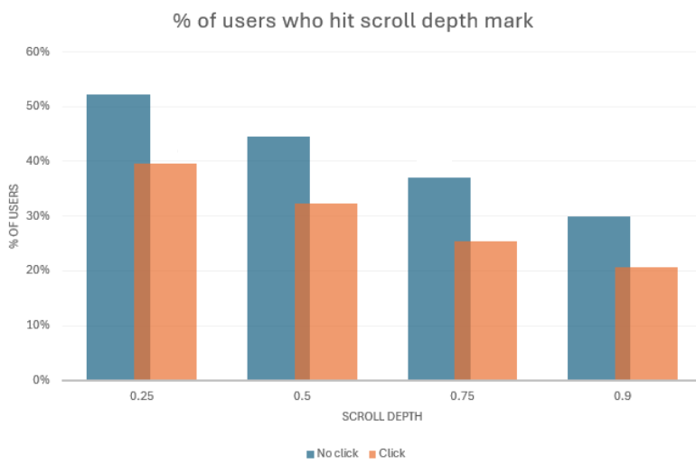

Funnel Conversion Rate Optimization and A/B Testing
Objective
This project materialized after my team made an observation over many CRO experiments, that a few distinct user patterns were emerging. We were noticing the following user types and associated behavior patterns:
- Bouncers (users who don’t convert)
- Clickers (users who convert)
Although these user segments are obvious (anyone who doesn’t convert is a bouncer), they were important for us to distinguish because we needed to intentionally optimize for the non-converter behavior pattern.
It was clear in our past winning experiments that we had optimized for the Clickers user segment very effectively; we knew what drove conversions and what didn't. But were missing the mark on Bouncers.
To approach this problem, we needed a clearer view of Bouncers and their behavior patterns: Did they spend time on the page and leave, or did they leave right away? Why did they leave If they did spend time on the page, what were they doing?
Deliverables
This project took the following shape:Research
To draw a comprehensive picture of Bouncers and their behavior patterns, I gathered data from multiple data sources: Google Analytics, a user survey, and internal Snowflake databases.
A note on the data: In this recap, I will focus on the first two data sources, as I am unable to share internal company data. The tools I used in this portion of analysis were SQL (to extract data from Snowflake databases) and R code (to analyze and visualize the data), constructing a comprehensive view of time to click of the Clicker cohort and average engagement time of the Bouncer cohort.
Google Analytics data
Using GA4 data, I grouped users into segments depending on events in their session. These events were ones that I had set up in Google Tag Manager in preparation for ongoing user-engagement-focused experimentation.
- Customized scroll tracking
- Due to the layout of our pages, we couldn't use GA4's default scroll trigger. Our content is hidden behind a "read more" link. GA4's default scroll tracking would label the user as scrolling 90% depth even if they did not view the content behind the "read more" link. In this case, we were primarily interested in understanding when users scrolled to 90% of the content, not the page.
- Due to the nature of our ad divs, we needed to configure custom data layer events to accurately track ad clicks, rather than relying on built-in link or element click triggers. I worked with front-end developers to configure these data layer events, and I built the associated custom event trigger architecture in tag manager.
User Survey
The nature of this investigation required qualitative data - we needed to understand what the users were thinking as they interacted with our pages.
I put together a proposal for a user survey. This was the first survey we had run on this domain, so I needed to get explicit stakeholder approval. My proposal included the project background, goal, proposed survey design, and supporting data.
After gaining approval, I collaborated with a UX researcher to design a SurveyMonkey survey asking users if they were able to find the information they were looking for. To mitigate any negative impact on the Clickers user segment, we ran two surveys with triggers aimed at non-converting behavior patterns:
- Time-delayed Survey, displayed after 20 seconds
- Exit-intent Survey, triggered when the user moves to exit the browser
Research Findings
The survey results showed that users' primary pain point is missing information. They were frustrated that the article did not contain key information that they expected, naturally leading to a bounce instead of a conversion.
After combining the survey data with GA4 data, a distinct pattern emerged: Bouncers are scrolling quickly, spending less than 20 seconds on the page, and are not converting. These are roughly 30% of users.
This chart shows that users who do not convert (i.e. click) are viewing more of the content than users who do not convert. We also know from internal data that users who do not convert have a lower time on page than their counterpart.
Now that we understand why these users are not converting, how can we capture their attention before they leave?
A/B Test: Related Post widget

After analyzing this data, I put together a proposal for a quick proof-of-concept test of a Related Posts popup. I argued that this would serve a dual purpose of capturing the user’s attention at a key point in the funnel, and offering them the information they are presumably missing.
Hypothesis: If we can capture the user’s attention at key point in the funnel and offer relevant information via a related posts popup, then users will continue in our funnel and convert.
RICE scoreAs we do with all experiments, I put together a RICE score, estimating the level of effort a full-fledged implementation would require vs. a proof-of-concept test.
- The full-fledged option RICE score: 3
- POC RICE score: 6
After deciding to go the POC route, due to the higher RICE score, I specified the build details and experiment parameters:
Build Configuration:- To reduce the scope, we will run a very limited experiment with only one article. The article will have a high volume of traffic with diverse traffic sources.
- No dev work needed upfront:
- Related posts will be hand-picked for relevancy
- Popup will be created and deployed through a third-party tool and managed through their platform
- To mitigate any negative effect on primary ad conversions, we will trigger the popup after users reach 50% scroll depth. Based on the GA4 data, at this point we know they are likely to complete the primary conversion (i.e. they are meeting the Bouncer behavior pattern)
Given available volume and current CTR, we need to use 50% weights to achieve a large enough sample size that will allow us to detect a relative 8% lift. Any delta greater than -8% or less than 8% will be considered parity (i.e. there is no observable effect on conversion rates to the positive or negative when a user sees the popup compared to when they don't.)
Note: The accuracy of these experiment parameters could have been improved by limiting the sample size calculation to only include the expected percent of users who will see the popup based on previous scroll behavior data (i.e. 30% of total users scroll to 25% scroll depth). In this test, however, all users were included in the sample size calculations.
- Experiment Length: 7 days
- MDE: 8%
- Power: 90%
- Confidence: 80%
- Weights: 50%
- Number of variants: 2 (Control and Popup)
- Revenue KPI deltas must be greater than 8% to detect a significant effect.
- Popup engagement should show a neutral effect on primary CTR and ideally show a net gain on subsequent conversions
Experiment Results
After configuring the variant using the third-party tool Popupsmart, Google Tag Manager triggers to control popup display, and our internal experiment tool to deploy and track results, we ran the experiment for the full 7 days.
Primary Revenue KPIs: Ultimately, the data showed that we cannot detect any effect over the control towards the negative or positive: Revenue KPI deltas were below the defined MDE of 8%.
Secondary Popup KPIs: The popup had a very low CTR (<5%), but intent was high in the users who did click on a related post. In fact, after the user clicked on a related post, they exhibited behaviors similar to Clickers:
- Conversions on Related Posts were higher than average
- Scroll depth on Related Posts was lower than average
- Users who converted on a Related Post did so within 20 seconds
Recommendation
After review result with my team and stakeholders, we planned to expand this test on a larger scale.
The estimated potential impact of a broader rollout, if we are able to sustain the high conversion rate on click-through posts, was as much as a 5% increase in total conversions.
The potential increase is greater if we were able to iterate and increase the popup CTR. Possible ways to iterate are adjusting the popup widget styling, reducing and increasing the number of articles in the popup and fine-tuning the popup value proposition by adjusting the title and article button texts.
Conclusion
In summary, this is an example of many scenarios where I was able to identify an opportunity through data, ideate solutions through qualitative and quantitative research, design an experiment, put together technical pieces of the experiment implementation, and give impactful recommendations and next steps to realize the lift identifed through results analysis.